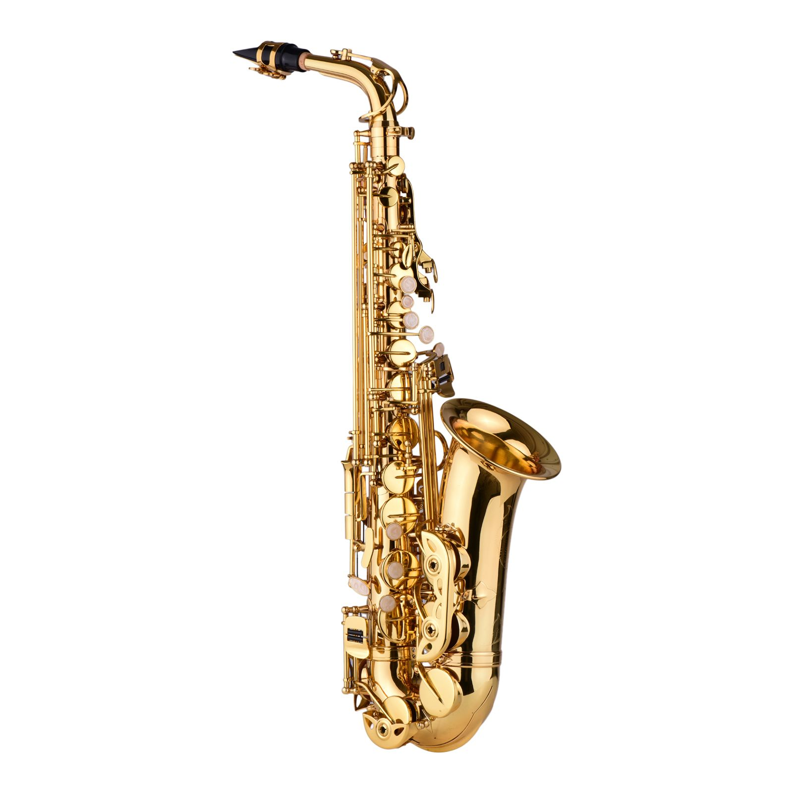

Саксофон был изобретён Адольфом Саксом в 1840-х годах в Бельгии. Изначально инструмент использовался в военных оркестрах, а затем стал популярным в джазе и классической музыке. Он имеет несколько типов, каждый со своим диапазоном и тембром, которые делают его уникальным.